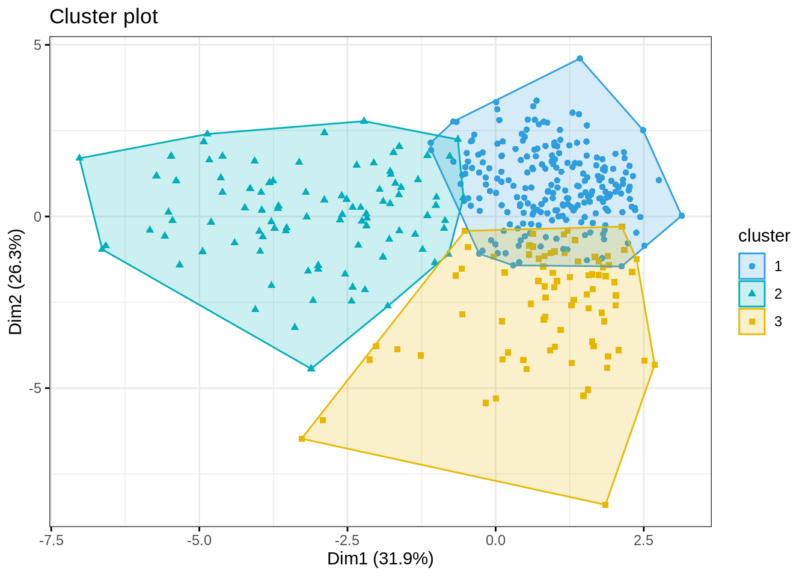

A diferencia de k-means, k-medoids no utiliza el centroide, si no que utiliza los medoides. Un medoide puede ser definido como el objeto de un grupo cuya disimilaridad media a todos los objetos en el grupo es mínima. Calcular los medoides es mas caro que calcular los centroides.
\[\min_{\mathbf{U,H}} \sum_{i=1}^n\sum_{g=1}^k u_{ig}d^2(\mathbf{x}_i, \mathbf{h}_g)\] \[st\hspace{0.5cm} u_{ig}\in \{0,1\}, \hspace{0.5cm}i=\{1,\cdots,n\}, \hspace{0.5cm}g=\{1,\cdots,n\}\]
\[\sum_{g=1}^k u_{ig}=1, \hspace{0.5cm}i=\{1,\cdots,n\}\]
\[\{h_1,\cdots,h_g,\cdots,h_k \} \subseteq \{ x_1, \cdots, x_i,\cdots,x_n\}\]
\[u_{ig} = \left\{\begin{matrix} \displaystyle 1,& \text{ si } g=arg\min_{g'=1,\cdots,k}\, d^2(\mathbf{x}_i, \mathbf{h}_{g'}) \\ 0, &\text{ otro caso }\end{matrix}\right.\]
\[h_g = arg\min_{i=1,\cdots,n} \sum_{i'=1}^n u_{ig}d^2(x_i,x_{i'}), \hspace{1cm}g=1,\cdots,k\] 4. Repetir pasos 2 y 3 hasta que no hayan cambios en 2 iteraciones.
El algoritmo de clustering k-medoids es tambien conocida como el algoritmo PAM (partitioning around medoids)
library(datasetsICR)
data("NBA.48")
NBA <- NBA.48[,c(1,8,10,11,13,14,16,17,18,19,21,22,23,24)]
data("NBA.game")
NBA <- NBA[NBA.game$MIN >= 12,]
row.names(NBA) <- NBA[,1]
NBA <- NBA[ , -1]library(cluster)
res.pam.3 <- pam(x = NBA, k = 3, stand = TRUE)names(res.pam.3)## [1] "medoids" "id.med" "clustering" "objective" "isolation"
## [6] "clusinfo" "silinfo" "diss" "call" "data"res.pam.3$medoids## PTS FGA FG. X3PA X3P. FTA FT. OREB DREB AST TOV STL BLK
## Cedi Osman 19.5 16.6 42.7 7.3 34.8 3.6 77.9 0.9 6.1 3.8 2.2 1.2 0.2
## Cody Zeller 19.2 13.3 55.1 0.8 27.3 5.4 78.7 4.2 8.6 3.9 2.4 1.5 1.6
## Emmanuel Mudiay 26.1 22.1 44.6 6.3 32.9 5.6 77.4 1.0 4.9 6.8 4.2 1.3 0.6res.pam.3$clusinfo## size max_diss av_diss diameter separation
## [1,] 226 11.359254 3.300690 14.46731 1.265893
## [2,] 95 9.187339 4.623588 12.39399 1.309079
## [3,] 82 9.330624 3.851973 12.54901 1.265893Comparemos con k-means
NBA.Z <- scale(NBA, center=TRUE, scale=TRUE)res.kmeans.3 <- kmeans(NBA.Z, centers = 3, nstart=50, iter.max=1000)table(res.pam.3$clustering, res.kmeans.3$cluster)##
## 1 2 3
## 1 210 0 16
## 2 10 80 5
## 3 6 0 76library(mclust)
adjustedRandIndex(res.pam.3$clustering, res.kmeans.3$cluster)## [1] 0.7407294library(factoextra)fviz_cluster(res.pam.3, data = NBA,
palette = c("#2E9FDF", "#00AFBB", "#E7B800"),
geom = "point",
ellipse.type = "convex",
ggtheme = theme_bw()
)